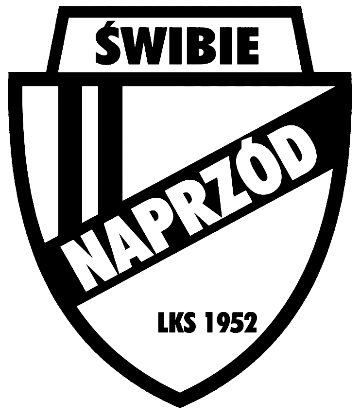
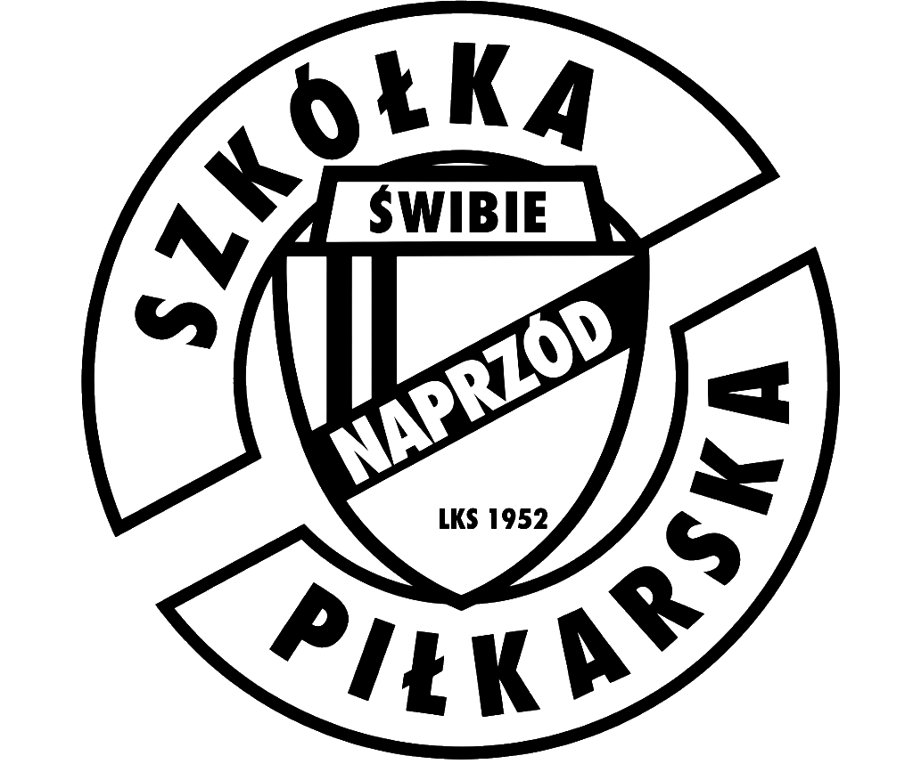

Biało-czarna duma gminy Wielowieś od 13 kwietnia 1952 roku. Sprawdź terminarz i wyniki w Klasie B, interaktywną kadrę na boisku „Kęp Noł”, zarząd oraz historię LKS Naprzód Świbie.

Szkolimy przyszłe pokolenia piłkarzy na obiektach w Świbiu! Grupy Skrzatów, Żaków, Orlików i Młodzików, wykwalifikowani trenerzy oraz słynny regionalny turniej Naprzód Świbie Kids Cup.
Od 13 kwietnia 1952 roku budujemy piłkarską historię na naszym legendarnym boisku „Kęp Noł”. Sprawdź aktualną tabelę, wyniki i kadrę pierwszego zespołu LKS Naprzód Świbie.
Zapraszamy chłopców i dziewczynki (roczniki 2012–2022) z gminy Wielowieś, Świbia i okolic! Treningi na naturalnej murawie „Kęp Noł”, zimą w hali sportowej oraz nasz flagowy turniej Naprzód Świbie Kids Cup!
Dla mieszkańców, kibiców i lokalnych przedsiębiorców przekazujących regularne darowizny na rozwój Naprzodu Świbie i szkolenie dzieci.
Wsparcie bezpośrednie dla najmłodszych grup (Skrzaty, Żaki, Orliki, Młodziki) oraz regionalnego turnieju Naprzód Świbie Kids Cup!
Dla firm i instytucji pragnących mocno zaznaczyć swoją obecność w życiu sportowym gminy Wielowieś i Klasy B.
| Poz. | Drużyna (16 zespołów) | M | Pkt | Z-R-P | Bramki |
|---|
Przełącz się na dedykowaną stronę naszej Szkółki Piłkarskiej (Skrzaty, Żaki, Orliki, Młodziki, grafik treningów i kalkulator grupy).
Dołączenie do Akademii LKS Naprzód Świbie jest proste i nie wymaga żadnych opłat na starcie. Pierwsze 2 treningi zapoznawcze są w 100% bezpłatne!
Wypełnij krótki formularz na stronie lub przyjdź 15 minut przed treningiem swojej grupy wiekowej na boisko przy ul. Sportowej 51.
Dziecko bierze udział w 2 pełnych zajęciach z rówieśnikami bez żadnych zobowiązań. Sprawdzacie atmosferę i podejście trenera!
Gdy dziecku się spodoba, wypełniasz deklarację członkowską, a trener pomaga w rejestracji w systemie PZPN (Łączy Nas Piłka).
Młody piłkarz otrzymuje wyprawkę treningową i reprezentuje Naprzód Świbie w turniejach ŚLZPN oraz festiwalu Kids Cup!
Klikaj kolejne kafelki wspólnie z dzieckiem przed wyjściem na trening na „Kęp Noł” lub halę:
Każde dziecko trenuje w grupie dopasowanej do swojego wieku i etapu rozwoju biologicznego. Prowadzimy nabór chłopców i dziewczynek do 4 kategorii wiekowych!
Przesuń suwak z wiekiem dziecka (od 4 do 14 lat), aby od razu zobaczyć dedykowaną kategorię szkoleniową ŚLZPN, charakter zajęć oraz dni treningowe.
Zajęcia ukierunkowane na czucie piłki, pojedynki 1v1, małe gry 4v4 / 5v5 oraz udział w bezwynikowych turniejach ŚLZPN i naszym domowym turnieju Naprzód Świbie Kids Cup.
Pierwszy krok na boisku! Bajkowe gry i zabawy ruchowe z piłką, ogólna koordynacja, równowaga i integracja z rówieśnikami w bezpiecznej atmosferze.
Złoty wiek nauki prowadzenia piłki, zwodów 1v1, podań oraz strzałów. Regularne turnieje pod egidą Podokręgu Zabrze ŚLZPN bez presji wyniku.
Rozwój rozumienia gry zespołowej, współpraca w trójkątach, przyjęcie kierunkowe i mecze 7v7 w rozgrywkach Śląskiego Związku Piłki Nożnej.
Wprowadzenie do piłki 9-osobowej i 11-osobowej, fundamenty taktyczne, kształtowanie motoryki oraz budowanie boiskowego charakteru!
W Szkółce LKS Naprzód Świbie stawiamy na długofalowy rozwój dziecka, a nie przypadkowy wynik najbliższego meczu. Zobacz, jak krok po kroku szkolimy młodych zawodników!
Dziecko zakochuje się w ruchu i piłce poprzez gry fabularne, berki, tory przeszkód i zabawy orientacyjno-porządkowe.
Intensywna nauka prowadzenia piłki obiema nogami, zwodów, nawrotów z piłką i odwagi w pojedynkach 1 na 1.
Przejście od „ja i piłka” do „ja, partner i piłka”. Nauka gry w przewadze 2v1, 3v2, podania i wyjścia na wolną pozycję.
Zrozumienie faz gry (atakowanie, bronienie, fazy przejściowe), kształtowanie szybkości i wytrzymałości na dużym boisku.
W grupach dziecięcych nie wywieramy presji na wynik. Chwalimy odważne próby dryblingu, kreatywność i zaangażowanie.
Podczas turniejów ŚLZPN i Kids Cup każde powołane dziecko spędza na murawie porównywalną liczbę minut.
Uczymy punktualności, dbania o sprzęt, szacunku do kolegów z drużyny, rywali oraz sędziego.
Aktywność na świeżym powietrzu na murawie „Kęp Noł” buduje odporność, prawidłową postawę ciała i relacje rówieśnicze.
Tworzymy kulturę wspierających trybun: rodzice nagradzają brawami każdą akcję, zostawiając podpowiedzi taktyczne trenerowi.
Stosujemy pełne Standardy Ochrony Małoletnich PZPN, bezpieczny atestowany sprzęt treningowy i opiekę wykwalifikowanej kadry.
Nasi trenerzy łączą wiedzę piłkarską zdobytą na kursach PZPN/UEFA z cierpliwością i pasją do pracy z dziećmi.
Szkolenie najmłodszych adeptów piłki nożnej (grupy Skrzatów i Żaków). Gry koordynacyjne, oswajanie z piłką, pierwsze mecze i bezstresowa zabawa.
Zespoły Orlików i Młodzików. Doskonalenie techniki użytkowej, współpraca w małych grach, mecze ligowe ŚLZPN i festiwal Naprzód Świbie Kids Cup.
Punkt kontaktowy dla rodziców: zapisy, deklaracje członkowskie, terminy zajęć oraz organizacja turnieju Naprzód Świbie Kids Cup.
Nasza Szkółka słynie w całym powiecie gliwickim i podokręgu zabrzańskim z organizacji wielkiego festiwalu piłkarskiego Naprzód Świbie Kids Cup!
Wyjście na naturalną murawę „Kęp Noł”, cotygodniowe turnieje i mecze ligowe w Podokręgu Zabrze oraz wielki letni festiwal Naprzód Świbie Kids Cup!
Zajęcia techniczne na słonecznej murawie, gry kontrolne z zaprzyjaźnionymi szkółkami, piknik rodzinny oraz sierpniowy nabór nowych roczników.
Start nowego sezonu szkoleniowego po pierwszym dzwonku! Turnieje jesienne ŚLZPN dla Żaków, Orlików i Młodzików oraz przyjęcie nowych Skrzatów.
Przenosimy się do ciepłej hali sportowej! Zimowe turnieje halowe, Mikołajkowy Mecz Dzieci kontra Rodzice oraz halowa edycja Kids Cup.
Do końca 2026 roku nie pobieramy składki członkowskiej za udział dzieci w treningach Szkółki LKS Naprzód Świbie. Chętni rodzice, darczyńcy i sympatycy mogą przekazywać dobrowolne darowizny na cele statutowe klubu.
Wszystkie dzieci trenujące w grupach Skrzatów, Żaków, Orlików i Młodzików są zwolnione ze składek członkowskich do końca 2026 roku.
Chętni rodzice i sympatycy mogą przekazywać darowizny na cele statutowe klubu na rachunek bankowy lub poprzez zbiórkę na Zrzutka.pl:
Przekaż 1,5% podatku dochodowego w dorocznym rozliczeniu PIT. Środki przeznaczamy w całości na dzieci trenujące w naszej Szkółce!
Sprawdź dni i godziny treningów poszczególnych roczników na boisku „Kęp Noł” (wiosna/jesień) oraz w hali sportowej (zima), a także pobierz dokumenty klubowe.
| Grupa / Rocznik | Dni treningowe | Godziny | Obiekt |
|---|
Ponad 74 lata biało-czarnej historii w gminie Wielowieś. Od założycielskiego meczu w 1952 roku, przez awanse do Klasy A, aż po dzisiejszą modernizację „Kęp Noł”.
Nowoczesna i bezpieczna baza treningowa dla dzieci i młodzieży przy ul. Sportowej 51 w Świbiu oraz wsparcie szkolenia z odpisów 1,5% podatku (KRS 0000294473).
Powstaje LKS Naprzód Świbie. Przyjęcie biało-czarnych barw klubowych w sołectwie Świbie.
Stowarzyszenie w KRS (0000294473) i status Organizacji Pożytku Publicznego (1,5% podatku).
Triumf w rozgrywkach Klasy B Podokręgu Zabrze i historyczny awans do zabrzańskiej Klasy A.
Trzy sezony zaciętej rywalizacji na szczeblu Klasy A Podokręgu Zabrze i Pucharu Polski ŚLZPN.
Szkolenie Skrzatów, Żaków, Orlików i Młodzików oraz organizacja turnieju Naprzód Świbie Kids Cup.
Granty na infrastrukturę, nagłośnienie, projekt nowych szatni i zwycięskie derby w Eurotech Klasie B!
Boisko LKS Naprzód Świbie o wymiarach 100 m × 60 m i pojemności ok. 500 miejsc to bezpieczne centrum szkolenia i życia sportowego sołectwa Świbie.
Pozyskanie dofinansowania (24 000 zł) oraz inicjatywy związane z magazynem energii i modernizacją zaplecza na terenie „Kęp Noł”.
Projekt nowoczesnego budynku szatniowo-sanitarnego (GBD Architektura) z salą klubową i komfortowym zapleczem dla dzieci.
Doposażenie obiektu w profesjonalny sprzęt nagłaśniający przy wsparciu radnych Gminy Wielowieś oraz lokalnych darczyńców.
Założony 13 kwietnia 1952 roku klub łączy pokolenia mieszkańców Świbia i całej gminy Wielowieś.
Posiadamy status OPP! Twoje 1,5% w PIT nic Cię nie kosztuje, a finansuje zakup piłek, bramek i sprzętu dla dzieci ze Szkółki Piłkarskiej oraz utrzymanie boiska „Kęp Noł”.
PULS KLUBU W SOCIAL MEDIA ŻYCIE SZKÓŁKI & KIDS CUP W SOCIAL MEDIA
🔥 DERBY DLA ŚWIBIA! Zwycięstwo 2:0 z Naprzodem Łubie!
Komplet punktów zostaje przy ul. Sportowej 51! Dziękujemy wszystkim kibicom za głośny doping na „Kęp Noł”. Biało-czarne charaktery pokazane na boisku! 🏴🏳️⚽
⚽ DOŁĄCZ DO BIAŁO-CZARNEJ AKADEMII! Pierwsze 2 treningi GRATIS!
Zapraszamy chłopców i dziewczynki w wieku od 4 do 14 lat na zajęcia naszych grup Skrzat, Żak, Orlik i Młodzik na murawie „Kęp Noł” przy ul. Sportowej 51!
🏆 NAPRZÓD ŚWIBIE KIDS CUP – Setki uśmiechów i grad bramek!
Nasze Skrzaty, Żaki, Orliki i Młodziki dały prawdziwy popis umiejętności! Dziękujemy rodzicom za przygotowanie strefy gastronomicznej, a trenerom za organizację turnieju!
⚡ Razem rozwijamy nasze „Kęp Noł” w Świbiu!
Dzięki programowi „Wzmocnij Swoje Otoczenie”, zbiórkom społecznościowym i odpisom 1,5% podatku (KRS 0000294473) nasza baza przy ul. Sportowej 51 zyskuje nowe oblicze!